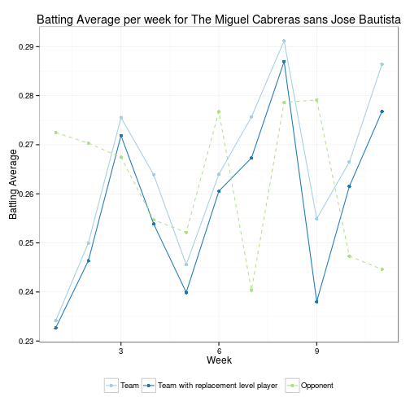

- Advanced Statistics have revolutionized how baseball is played and managed.
- Wins above replacement, wRC+, xFIP, . . .
- Advanced Statistics will revolutionize your fantasy baseball league too.
- Don't get left in the dust!
- See how it works . . .
The R Fantasy Baseball Calculator
Quantify your players' production sabermetrically
jhsdatascience
The Vision
How it works
Visualize how your team has performed in each category for the season so far:

How it works
Figure out how pivotal a player has been for you in each statistical category:

How it works
Calculate how many wins a player has been worth this season:
records <- rbind(calculate_record(weekly_totals[weekly_totals$team == team,], opponents_totals[opponents_totals$team == team,]), calculate_record(replaced_totals, opponents_totals[opponents_totals$team == team, ])); rownames(records) <- c('Actual record', 'Record without Jose Bautista')
fvalue <- records[1,1] - records[2,1] + .5 * (records[1,3] - records[2,3])
print(xtable(records), type = 'html')
| wins | losses | ties | win_percentage | |
|---|---|---|---|---|
| Actual record | 40 | 38 | 10 | 0.51 |
| Record without Jose Bautista | 35 | 42 | 11 | 0.46 |
- Find out that Jose Bautista has been pivotal in 4.5 wins thus far this season.
- There is so much more!
- Visit https://jhsdatascience.shinyapps.io/fantasy-baseball-player-values/ to keep exploring.